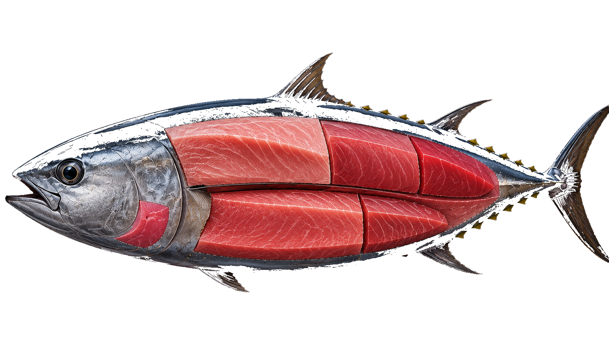
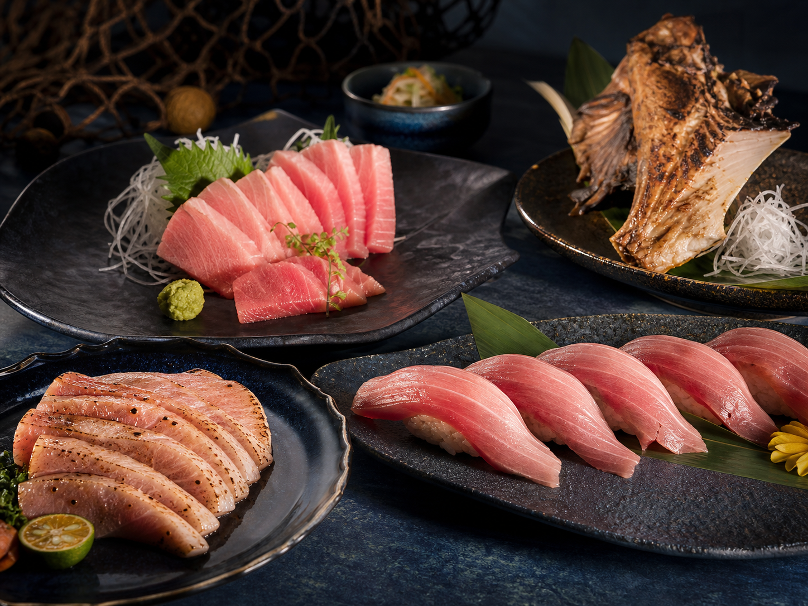

市場的燈光下，魚身銀藍，成為季節的第一個信號。
Scene 01
凌晨出海
凌晨三點。
東港還未甦醒。
漁船已駛向深海。
Scene 02
黑鮪魚洄游
每年春夏。
黑鮪魚穿越南方海域。
對東港而言，這是一年的開始。
Scene 01
凌晨三點。
東港還未甦醒。
漁船已駛向深海。
Scene 02
每年春夏。
黑鮪魚穿越南方海域。
對東港而言，這是一年的開始。
First Bluefin Auction
第一鮪是季節、技術與港口聲望的公開儀式
每一次落槌，都讓東港的海洋記憶被重新說起。
2025 第一鮪紀錄
市場的燈光下，魚身銀藍，成為季節的第一個信號。
喊價、秤重、圍觀，是港口共同參與的年度時刻。
第一鮪連結市場、料理與觀光，也連結漁民的技藝。

Tradition × Modern Culture
在東港，黑鮪魚不是一道孤立的料理。它與漁船返港、魚市場拍賣、東隆宮信仰、老市場人情共同構成一座港口的靈魂。
傳統讓日常有根，現代讓文化被重新看見。黑鮪魚文化正是在這兩者之間，持續流動。

CULTURAL PICTURE BOOK
以水彩故事走進黑潮、港口與一尾魚的旅程
Interactive Bluefin Anatomy
點擊魚體部位，理解料理特色、文化知識與市場價值。

Donggang Daily Timeline
像紀錄片的時間軸，沿著港口的日常向前移動。
海面轉亮，返港的船帶回深海消息。
秤重、喊價、簽單，速度與默契構成市場節奏。
料理把海上的勞動，轉化成餐桌上的記憶。
港口信仰讓海洋生活有了精神座標。
一天收束，船影與霞光在水面慢慢重疊。
Bluefin Cuisine Gallery
黑鮪魚料理不是炫耀式的昂貴，而是漁港、季節與職人手感的延伸。

黑鮪魚生魚片